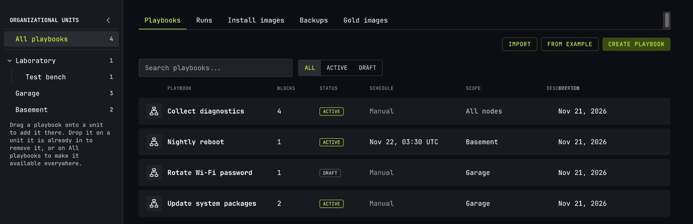
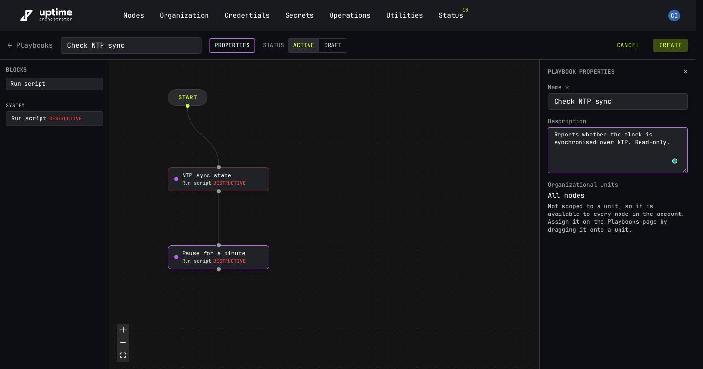
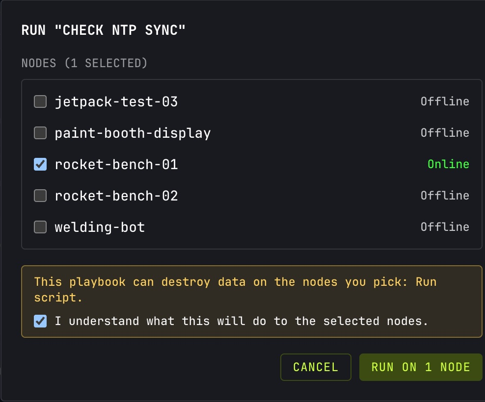
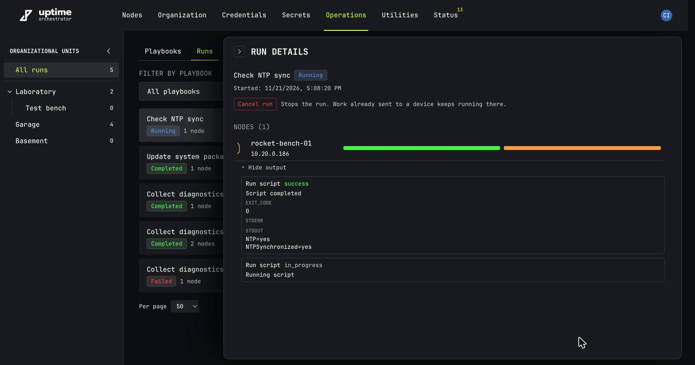
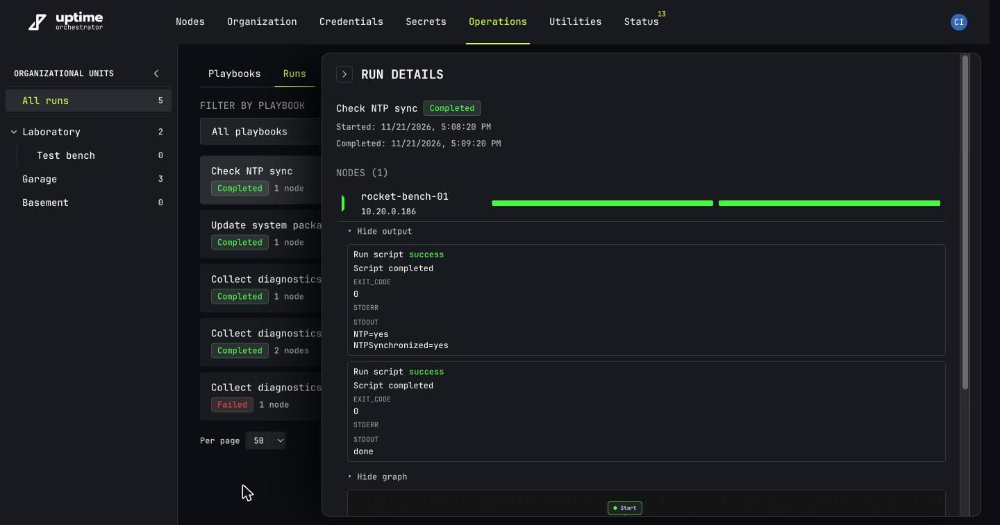
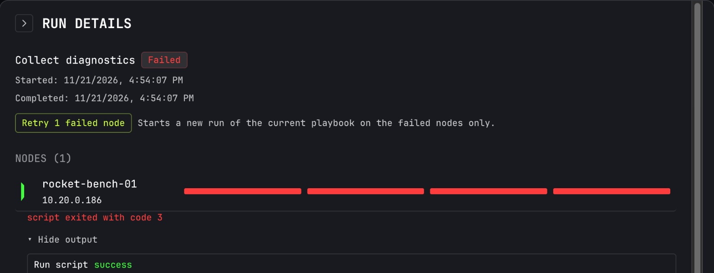
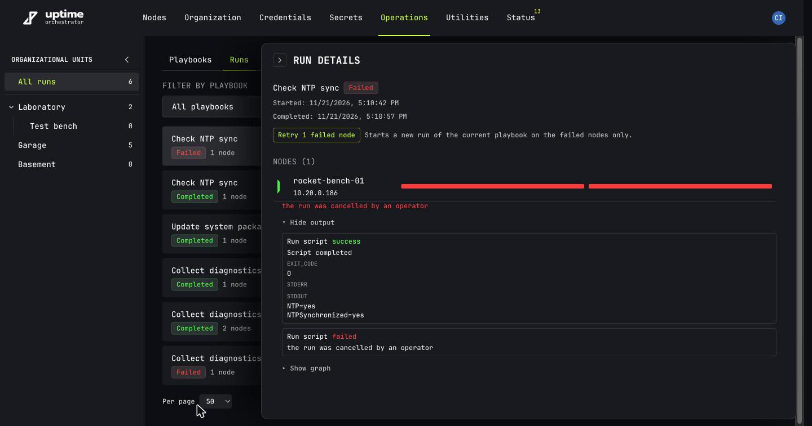
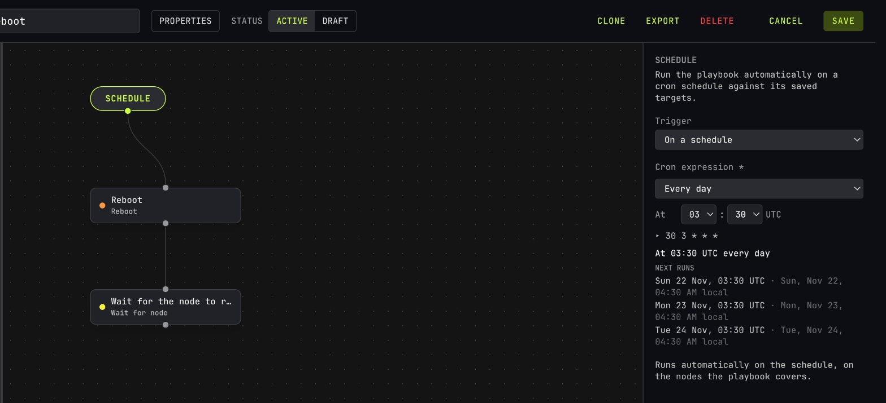

Playbooks: automating work across nodes
Build a playbook from blocks, scope it to units, run it on nodes or on a schedule, and read what happened on each node.
A playbook is an ordered list of steps that the platform runs on every node you target: run a script, write a file, reboot and wait for the node, install an OS. You build it once on the Operations page and run it by hand or on a schedule. (The API calls playbooks workflow templates and runs workflow executions.)
The Playbooks tab
Open Operations. The Playbooks tab lists every playbook in the account.

- Playbook, Blocks (the number of steps that run on the device; control steps such as Wait for node are not counted), Status (active or draft), Schedule (Manual, or the next scheduled run in UTC), Scope (All nodes or the units it is attached to) and Created.
- All / Active / Draft filter by status; the search box filters by name.
- Hover a row for its actions: run, edit, clone as draft, export as JSON and delete. Click the row to open the editor. The rail counts the playbooks available in each unit.
Create a playbook
You have three starting points, top right: Create playbook, From example and Import.
Create playbook: the editor
The editor is a canvas. The Start block is the trigger; every step you add hangs below it and runs in order.

- Type a name in the Playbook name field at the top.
- Click a block in the Blocks palette on the left (or search for it). Its settings open on the right.
- Fill in the Parameters, then click Add to canvas. The block is connected below the last one.
- Click Properties to add a Description. The properties panel also shows the playbook's scope.
- Pick Active or Draft next to Status, then click Create (or Save for an existing playbook).

Every block has the same three sections in its settings panel:
- Step name (optional) and Description (optional): what the run view and the canvas show.
- Parameters: the block's own fields. A required field is marked with
*. - Policy: Retries (0 to 10 re-dispatches of a failed step), Timeout (s) (0 means none; at most 86400) and On error: Fail the run stops this node's run, Continue carries on to the next step as if this one succeeded.
The palette groups the blocks by category. Blocks marked destructive in red can lose data or interrupt service; running a playbook that contains one asks you to confirm.
| Category | Blocks |
|---|---|
| Power | Reboot (delay), Shutdown |
| OS | Install OS (image, target device, reboot after, overwrite a used disk), Install agent, Update agent (version, default latest), Capture image (title, generalize) |
| Software | Install packages (one per line, optional apt-get update), Download file (URL, destination, SHA-256, extract, mode, owner, headers), Write file (path, content, mode, owner, backup), Manage service (unit name, action, optional unit file) |
| System | Set hostname, Provision access, Run script (script, timeout), Set watchdog (preset) |
| Boot | Update boot order, Allow EEPROM flashing from the OS, Reboot to recovery, Set boot policy |
| Files | Update file, Patch config file (a managed block, config.txt by default), Patch file (from recovery), Read file (optional capture regex), Wait for file (match regex, poll interval, timeout) |
| Storage | Erase drive |
| Diagnostics | Status check |
| Control | Wait for node (until online, recovery or managed_os; timeout 900 s by default), Condition (compare two values; routes to True or False), Wait (seconds), Join (merge parallel branches) |
| Integrations | Save secret, Set node attribute, HTTP request (method, URL, headers, body, timeout) |
Some blocks only work in one boot state; the editor warns, for example, when Capture image is not preceded by Reboot to recovery and Wait for node.
Variables and secrets
Text fields accept {{...}} references, resolved separately for each node at the moment the step runs:
{{secrets.NAME}}: a secret or variable that reaches this node; a changed value is used from the next run on. How entries reach a node is on Secrets and variables.{{node.hostname}},{{node.name}},{{node.serial}},{{node.model}},{{node.agent_version}},{{node.online}},{{node.boot_device}}; and{{node.attributes.KEY}}for a custom node attribute.{{blocks.ID.outputs.KEY}}: an earlier step's output, such asstdoutof Run script orcontentof Read file.
An unknown reference becomes an empty string. Values from secrets are redacted in command history for anyone not allowed to read secret values.
From example
From example opens Create from template with four ready-made playbooks: Install OS, Capture a golden image, Back up a node and Restore from a backup. Each card lists its steps. Clicking a card creates it as a draft scoped to the unit selected in the rail; review it in the editor and set it to Active.

Import
Import takes a JSON file exported with the row's export action or the editor's Export ("kind": "orchestrator.playbook"). The import is always created as a draft. OS image and SSH key choices are stripped on export, because they belong to one account; pick them again after importing.
Draft and active
A draft is saved and editable, but it is hidden from every run picker and never fires on a schedule. Active playbooks can be run and scheduled. A new playbook from Create playbook starts as Active; examples and imports start as drafts.
Scope: where a playbook is available
A playbook is either available everywhere (All nodes) or attached to one or more units. A scoped playbook runs only on nodes of its units and their child units.
- To attach it, drag the playbook row onto a unit in the rail.
- Drop it on a unit it is already in to remove it from that unit.
- Drop it on All playbooks to make it available everywhere again.
In the examples, Update system packages is scoped to Garage, Nightly reboot to Basement, and Collect diagnostics is available everywhere.
Run a playbook
- On the Playbooks tab, hover the row and click the run icon. (From a node, use Run playbook in its panel; see Working with a node.)
- Tick the nodes. The list contains only nodes inside the playbook's scope, with their state: Online, Offline or recovery.
- If the playbook contains destructive or rebooting blocks, read the warning and tick I understand what this will do to the selected nodes.
- Click Run on N nodes.

What to expect:
- Each node runs its own copy, in parallel. One failing node does not stop the others; the run then reads Failed on some nodes.
- Offline nodes can be selected, but scripts, reboots and file reads fail at once on them. Declarative steps (Set hostname, Patch config file, Update agent) wait in the node's queue for up to 24 hours instead.
- A run keeps the playbook as it was at the start. Later edits do not change it.
- By default an account can have 20 runs and 250 node runs in flight; a start beyond that is refused.
The Runs tab
Runs lists runs newest first, with a status (Pending, Running, Completed, Failed, Failed on some nodes) and the number of nodes. Filter with Filter by Playbook or the unit rail. Click a run to open Run details.

Each node has a bar with one segment per step: green succeeded, orange running, red failed. Show output lists every step's result in order: the block type with its status, the message, and for scripts EXIT_CODE, STDERR and STDOUT. Show graph draws the flow with each block's state.

Reading a failure
The oldest Collect diagnostics run on rocket-bench-01 is Failed. The node line says why in red: script exited with code 3.

Open Show output. The first two steps succeeded. The third, Check free disk space, failed: its STDERR reads Not enough free disk space: 443 GB free on /, at least 1000 GB required. The fourth never ran, because On error was Fail the run.

The fix was in the playbook, whose minimum is now 5 GB. Retry 1 failed node starts a new run of the current version on the failed nodes only; the failed run keeps the old version for the record.
Cancel a run
While a run is in flight, Run details shows Cancel run. It acts immediately, without a confirmation. Every unfinished node is marked failed with the run was cancelled by an operator and the run ends as Failed.

Run on a schedule
Select the Start block and set Trigger to On a schedule. The block becomes Schedule.

- Cron expression offers Every few minutes, Every hour, Every day, Every week, Every month and Custom. Custom takes a five-field cron expression (minute, hour, day of month, month, day of week), with
*, lists, ranges and steps. Names such asMONare not accepted. - Schedules are in UTC. The panel shows the expression, a plain-language reading and the next runs in UTC and in your local time. Nightly reboot is
30 3 * * *. - A scheduled run targets every node in the playbook's scope, offline ones included: Nightly reboot fails on any Basement node that is offline at 03:30.
- An expression that never matches is refused on save. Drafts never fire. A missed minute is not caught up.
- By default the scheduler honors 10 scheduled playbooks per account, oldest first.
Who did what, and how long it is kept
Run details does not show who started a run; the audit trail does, as playbook.run_start (scheduled runs show the platform). Finished runs are deleted after 30 days by default (WORKFLOW_EXECUTION_RETENTION_DAYS). Both are covered in Status, attention and the audit trail.